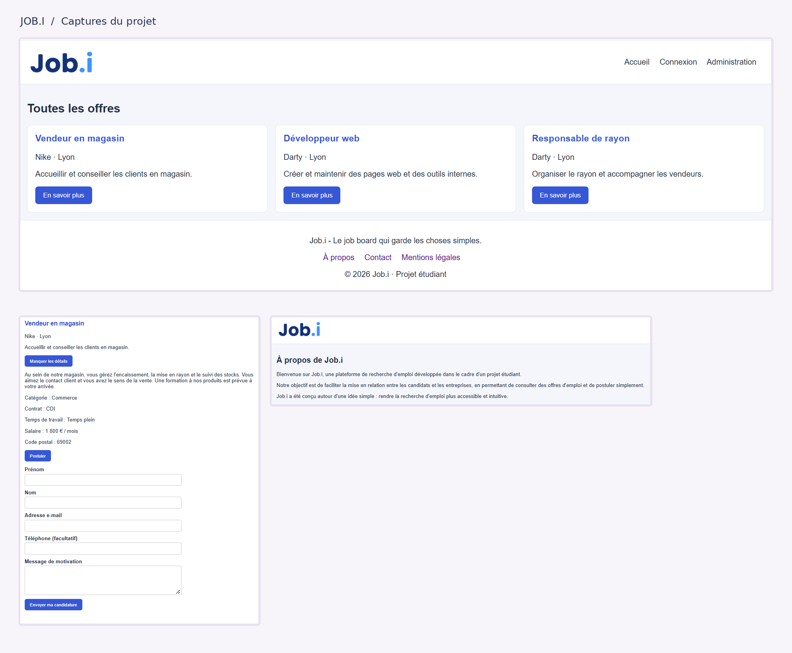

Mes réalisations
Mes petites créations.
Apprendre à coder, c'est aussi essayer, se tromper, comprendre et recommencer. Voici les projets qui accompagnent mon apprentissage à Epitech.

01 / Projet web en équipe
JobBoard
Le contexte et l'objectif
Réaliser en équipe un site de recherche d'emploi permettant de consulter des offres, de créer un compte et de se connecter. Le site comprend également une interface d'administration.
Ce que j'ai réalisé
J'ai travaillé sur les pages du site, leur présentation et leur navigation. J'ai également participé à l'intégration des fonctionnalités de connexion et d'inscription.
Ce que j'ai appris
Ce projet m'a permis de découvrir Laravel, de mieux comprendre les échanges entre l'interface et le serveur, et de travailler en équipe avec Git et GitHub.
Les technologies
HTML · CSS · JavaScript · PHP · Laravel · MySQL
Voir le code sur GitHub ↗Jeu vidéo en préparation
02 / Projet en préparation
Mon futur jeu vidéo
Le contexte et l'objectif
Dans le cadre de ma formation à Epitech, je découvre Java et la programmation orientée objet. L'objectif est de mettre progressivement ces connaissances en pratique dans un projet de jeu vidéo.
Ce que j'ai déjà appris
J'ai travaillé sur les classes, les objets, les constructeurs, les attributs et les méthodes. J'ai également découvert l'héritage et les interactions entre objets.
Mon prochain défi
Passer des exercices individuels à un programme plus complet, en organisant mon code et en reliant plusieurs classes entre elles.
Les technologies
Java · Programmation orientée objet · Git
Projet en préparation : cette partie évoluera avec les prochaines étapes de mon apprentissage.
Mon évolution
J'apprends un projet à la fois.
Au début de ma formation, beaucoup de notions étaient nouvelles pour moi. Aujourd'hui, je comprends mieux la structure d'un programme et j'apprends progressivement à identifier et corriger mes erreurs.
Mon objectif est de gagner en autonomie et de développer des projets de plus en plus complets.
Et ce n'est que le début !
Cette page évoluera au fil de ma formation, avec mes nouvelles réalisations et les compétences développées.
Me contacter →